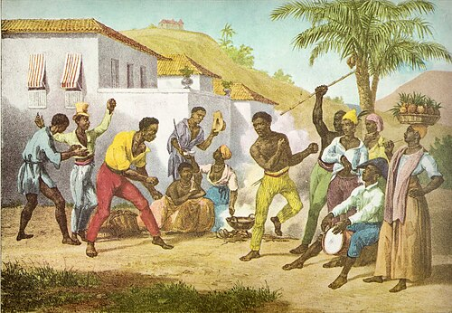

Capoeira adalah seni bela diri asal Brasil yang memadukan unsur tarian, akrobatik, dan musik. Seni ini diciptakan oleh budak Afrika pada abad ke-16 sebagai bentuk perlawanan terhadap penjajah Portugis. Agar tidak dicurigai, mereka menyamarkan latihan bela diri ini menjadi tarian tradisional yang diiringi musik berirama cepat. Sempat dilarang di Brasil pada abad ke-19, capoeira akhirnya dilegalkan pada tahun 1930-an berkat jasa Mestre Bimba. Kini, capoeira telah diakui sebagai Warisan Budaya Takbenda oleh UNESCO dan populer di seluruh dunia.
